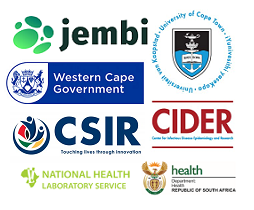
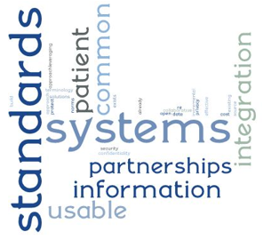
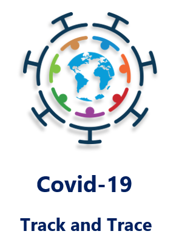

The Reference African Health Information Exchange (AHIE) promotes the optimisation of patient healthcare through a replicable, context-appropriate health information exchange design.
With a focus on person-level data, the design enables data capture as well as cascade reporting for individuals throughout their journey of disease management and care at clinician level, while allowing for aggregated data availability at a regional and national healthcare management level.
Key to the AHIE design is patient-level data harmonisation, data exchange and bi-directional interoperability between a set of matured health information technologies.

About the AHIE Project
Background
In late 2016 the Bill and Melinda Gates Foundation awarded a grant to the University of Cape Town to establish a Reference African Health Information Exchange. The aim of the project was to deliver a replicable and context-appropriate implementation of a health information exchange for clinical data working across national and provincial health departments in South Africa.
In the South African health system, the national government provides policy, norms and standards, while personal health services are delivered by the provincial governments, and in some instances by large municipalities.
The federated health exchange model that this project sought to demonstrate would support this division of responsibility and services. It would ensure that technologies, standards and tools were harmonised for national use, while supporting the management of patient-level information at the level where services are funded.
An anticipated outcome of this would be successful interoperability implementations for key systems that were critical to the country’s HIV and TB response.
To achieve these objectives of the AHIE project, a consortium of partners was brought together, in a collaboration which required the inclusion of particular expertise. These partners were the CSIR, NDoH, NHLS, UCT CIDER, Jembi and PHDC.
The partnerships established further supported the long-term objective of the AHIE project, which is to develop a community of practice, where all institutional bodies with an interest in interoperability or personal-level health care systems can come together in a virtuous community of practice.

Project Principles
The AHIE project approach was strongly aligned with the following principles:
- Take an incremental approach – build on what already exists.
- Enable integration between systems wherever appropriate.
- Ensure common standards, norms and systems across the country.
- Establish common data standards and terminology across information systems.
- Encourage a collaborative approach by leveraging partnerships.
- Protect information security, confidentiality and patient privacy.
- Procure or develop cost-effective and re-usable information systems.
- Consider open source solutions for cost effectiveness.
Key Deliverables
In terms of the technologies, architecture, workflows and data science approaches which would be required for the reference health information exchange, the AHIE project identified the following key deliverables:
Strengthening an existing initiative by the NDoH and CSIR in the roll-out of a unique identifier
- Although a lot that can be done in the absence of a single Unique Health Identifier, it is an important building block when working with distributed health information systems. The development and roll out of the national Health Patient Registration System (HPRS) by the NDoH and CSIR was a key game changer in improving the quality of identifying data that could be used for linkage.
Build out the patterns and methods of consolidating data within large government departments
- Develop the patterns for data consolidation and integration, curation, common terminologies and find ways of processing that data that would best support operations. The Western Cape province had a head start in providing aspects of this functionality through the Provincial Health Data Centre (PHDC) and would serve as the innovation incubator for the data integration and maturing of technologies, architecture, workflows, and data science approaches that could then be easily transferable nationally and regionally.
Work on specific interoperability solutions that were standards based
- Develop interfaces that could be used by multiple systems in the future that are Open and standards compliant. This was in line with the national health informations space where the country had published normative standards for interoperability (specifically for the HIV and TB program)
Mature selected reference applications
- Reference applications which could use the interoperability technology to access the consolidated data and the consolidated data environments were identified for maturation.
Unique Value of AHIE
The unique value of the AHIE approach is in not relying on one single megalithic electronic medical record system for everything. Large EMR systems present challenges, both for lack of coverage and delays in achieving that coverage, as well as supply chain issues with large IT systems. An interoperability approach, which attempts to leverage whatever data is there and then improve upon it, often stands a better chance of success, largely due to the data being made available a lot earlier than if waiting for maturity of a monolithic system.
Early Success
An unexpected initiative presented when Covid-19 became a healthcare crisis.
Since COVID-19 is a notifiable medical condition with statutory requirements for reporting to government, there was an urgent need to rapidly consolidate data from a range of different sources and, most importantly, onboard private healthcare data into a single environment with the public healthcare data.
At the start of the Covid-19 crisis the PHDC and the SPV were already in place as an existing data centre, with all the patterns developed for integrating and ingesting data. In support were people with the right data competence, who could rapidly adapt to this challenge.
This enabled the creation of an end-to-end information system which integrated the various laboratory, hospitalisation and mortality data into a Covid-19 system. It included a workflow to support track and trace, without the need for a separate system, which simply leveraged current information from other healthcare contacts.

Research questions around Covid-19, such as how HIV and TB impact severe Covid-19 presentations and associated mortality, were able to be answered because of this.
The model already in place also made it possible to rapidly integrate across multiple systems. An example was the ability to hand-off information to a call centre and have their findings integrated back into the consolidated environment. Integration of data from the national track and trace system, which SMSed people their results and engaged them in bidirectional cellphone-based contact with the national Department of Health, is another example.
This was a pressure test of the environment and helped to solidify and evolve the end-to-end function.
Partners

Jembi Health Systems is one of the founders and leaders of the Open Health Information Exchange international community. Jembi is responsible for the interoperability layer and shared health record communities as well as participating in the OpenHIE Implementers Network (OHIN).
Jembi provides the interoperability layer critical to data exchange in the AHIE project architecture, as well as the SPV reference application developed in collaboration with UCT.

The Provincial Health Data Centre (PHDC) consolidates all person level health data in the Western Cape Department of Health. The primary purpose of the data centre is to enhance clinical care by ensuring availability of data to clinicians and to those responsible for following up patients with specific health conditions. These data are strictly governed in accordance with the requirements of the National Health Act and Protection of Personal Information Act. Data are only accessible through clinical tools used by government clinicians as part of providing patient care, or in response to data requests associated with approved research projects.
The PHDC facilitates data harmonisation and curation, data beneficiation, and data provision within the AHIE project.
TIER.Net (Three Interlinked Electronic Registers.Net) is a stand-alone electronic register developed by the University of Cape Town Centre for Infectious Disease Epidemiology and Research (CIDER) . Functioning as a middle-tier offline system, within the three-tier monitoring and evaluation system for HIV and TB adopted by the NDoH, TIER.Net is used for back-capture of the paper registers and automated production of a range of reports that are delivered centrally in electronic format.
TIER.Net is included as a reference application within the AHIE project and has been matured to integrate with a national patient master index, laboratory results and drug dispensing data to provide critical patient-level information required for direct patient care at the point of service and for addressing issues of adherence and loss to care.
The NHLS is the main provider of clinical support services to the national, provincial and local Departments of Health through its countrywide network of diagnostic laboratories. It conducts diagnostic tests, produces highly acclaimed research and provides teaching and training for medical technicians, medical technologists and pathologists. The NHLS also provides surveillance support for communicable diseases, occupational health and cancer, and thus, it endeavours to align its strategy to both the Department of Health priorities and the National and Regional Burden of Disease Surveillance.
The NHLS forms an integral part of the AHIE reference implementation with the successful roll-out of TIER.Net – NHLS data exchange via interoperability technology.
The National Department of Health (NDoH), in re-engineering its primary healthcare system, identified several national e-health initiatives. These initiatives included the Health Normative Standards Framework (HNSF) for eHealth, the implementation of a national patient registration system, Operation Phakisa to transform public sector clinics, the assessment of existing health information systems, and the launch of MomConnect.
It was proposed that the technologies, architecture, workflows and data science approaches developed for the AHIE Project should serve as reference implementations for the HNSF, prototyping methods for data processing, interoperability and harmonization that could support management and service delivery in large health care enterprises. Successfully delivered, these reference implementations could be transferable within South Africa and regionally in other African countries.
The Council for Scientific and Industrial Research (CSIR) is a world-class African research and development organisation which undertakes directed, multidisciplinary research and technological innovation with the aim of improving the quality of life of South Africans.
The inclusion of the national Health Patient Registration System (HPRS), developed and implemented by the NDoH and CSIR, enables linkage of patient-level data from multiple sources within the AHIE project design.